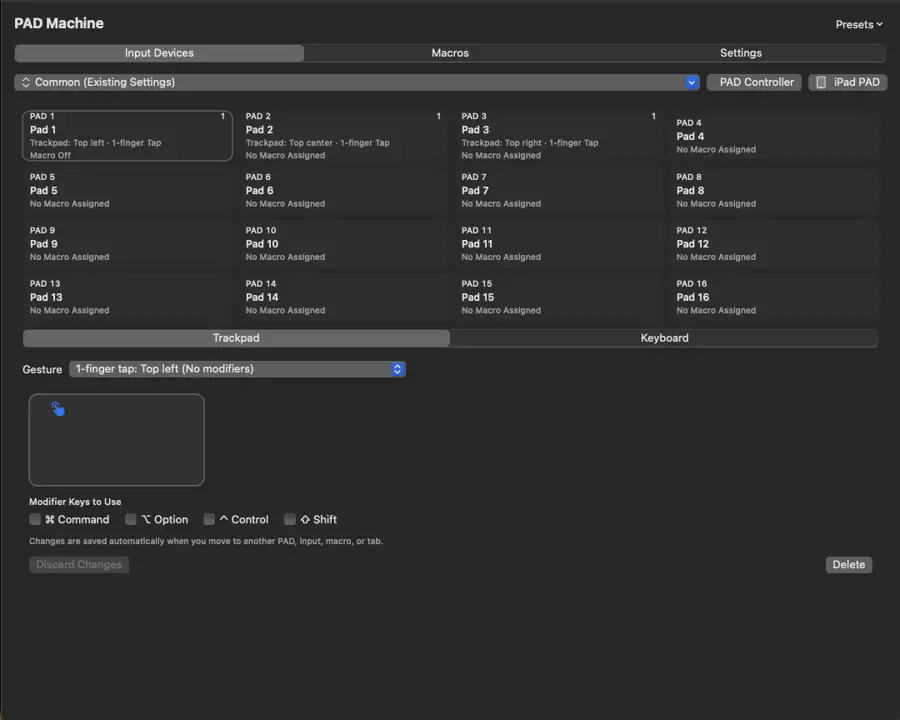
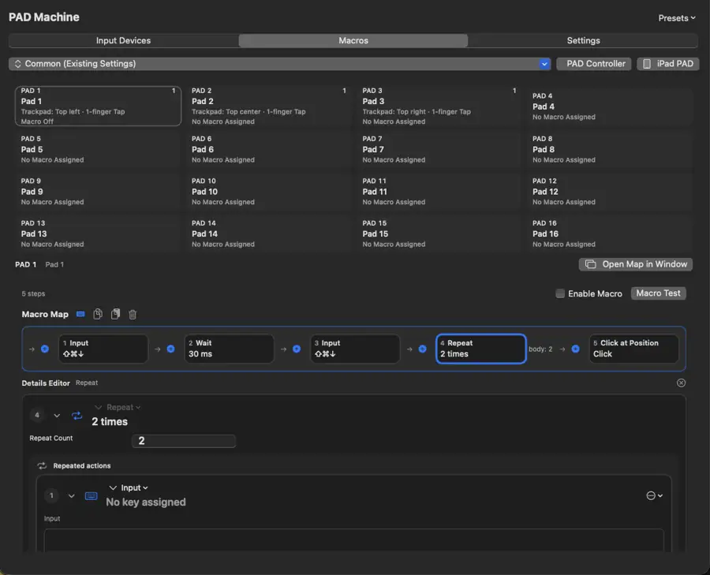

Make your trackpad work for you
Assign your favorite macros to trackpad gestures and taps. Trigger repeated actions without constantly reaching for the keyboard.
Whether you're editing audio, working in creative software, or handling repetitive tasks, PAD Machine helps you build controls around the way you work.

Turn your trackpad into a numpad
Need a numeric keypad but don't want another device on your desk? PAD Machine can turn your trackpad into an on-demand numeric keypad, with an optional translucent on-screen key layout.
Switch between normal trackpad use and numeric input as needed.
Your iPhone or iPad becomes a PAD controller
Use an iPhone or iPad as a wireless 16-pad macro controller for your Mac. Connect through your local network, open the controller in a browser, and trigger your assigned macros with a tap.
No separate iPhone or iPad app is required. Your Mac runs PAD Machine; your mobile device provides the controls.
Build macros your way
Create macros using a visual action editor. Combine keyboard shortcuts, mouse actions, waits, and repeat steps. Arrange actions in the order you want, assign them to one of 16 pads, and choose which Mac application should use them.
From simple shortcuts to multi-step workflows, PAD Machine is designed to be customizable without requiring programming.

Simple to start
Assign a single keyboard shortcut to a pad or gesture.
Room to grow
Connect actions into a repeatable workflow and tailor it to an app.
Made for your workflow
PAD Machine isn't limited to Pro Tools or audio production. It's a flexible macOS utility for people who want more control over their everyday tools, without buying a dedicated hardware controller.
Download PAD Machine
Requires macOS 13 or later. Direct-distribution DMG for M-series Macs.
Download PAD Machine 0.5.0 (DMG)
To install, open the DMG and drag PAD Machine into Applications. Some features require macOS Accessibility and Input Monitoring permissions.
Release notes
PAD Machine 0.5.0 (build 1)
Editing and input reliability. This release refines the 16-pad workspace and macro editor.
- Copy and paste: More predictable PAD and macro module copy/paste, with clearer focus and selection behavior.
- Input auto-save: Editing state is shared across PADs, tabs and app banks, with incomplete input edits kept for correction.
- Duplicate inputs: More useful indicators for shared gestures and different registration conditions.
- PAD names: Copying a default-named PAD uses the destination slot number; custom names remain unchanged.
Existing assignments and macros remain in place when updating. Permission settings may need review after changing the installed app.
PAD Machine 0.4.0 (build 1)
Smarter keyboard command execution. This update refines how PAD Machine sends shortcuts in multi-step macros.
- Optimized key-command delivery: Improved the timing of key presses and releases for more consistent command sequences.
- Better handling of repeated modifier-key shortcuts: Consecutive commands using the same Command, Shift, Option, or Control modifiers are sent as distinct keystrokes.
- Smarter command spacing: Only the minimum additional interval is applied when needed. Wait steps you already configured in your macros count toward that interval, avoiding redundant delays.
Your existing PAD assignments, macros, and custom wait values are preserved. The update improves keyboard-event delivery; it does not verify that the target app has completed an edit.
PAD Machine 0.3.1 (build 2)
Initial public release with customizable trackpad gestures, the visual macro editor, an on-demand numpad, and a browser-based 16-pad iPhone/iPad controller.
Support
Questions, bug reports, and feature requests: kjdevapphelp@gmail.com
For bug reports, please include the PAD Machine version, macOS version, and the steps to reproduce the issue.